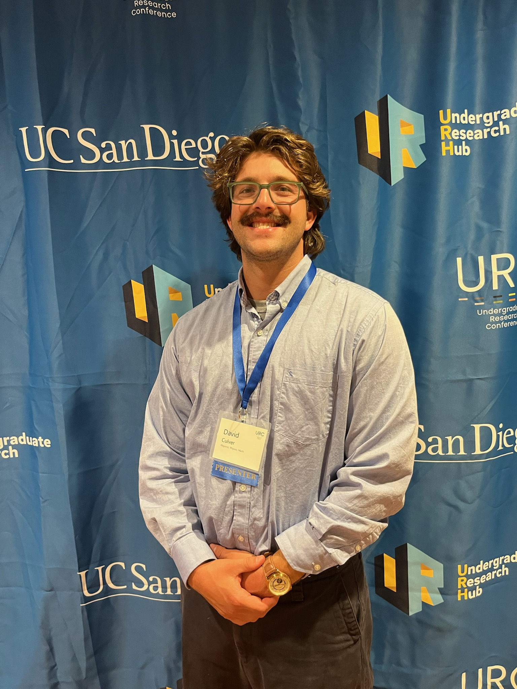

David Culver
ML Researcher and Physics + Math Student
Hello and welcome to my personal website! I am a passionate ML researcher and an overall enthusiast of all things math or physics related. I have a strong background in math and physics which has fueled my interests in exploring scientific machine learning. While ML and AI have been greatly accelerated with the use of LLMs, the scientific power which ML models can provide is still largely untapped. This website serves as a platform to showcase my work, education, and personal interests. I am always eager to connect with like-minded individuals, so feel free to reach out if you share similar passions or have any questions about my work.
Overview
Education
B.S. in Mathematics & B.S. in Physics
Skills
Experience
Undergraduate Research Assistant
Created and applied a novel machine learning approach modeling lidar points clouds of the sea surface.